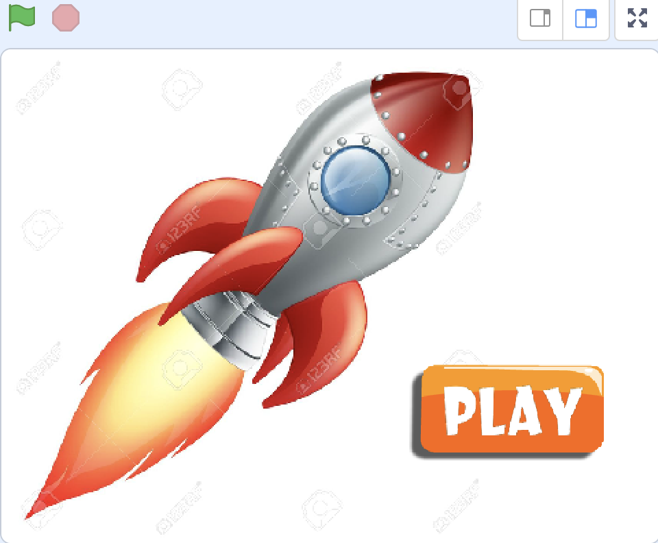
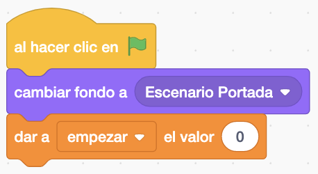
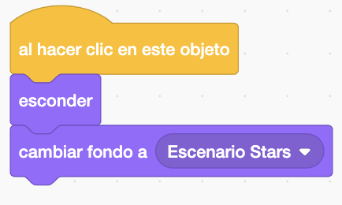
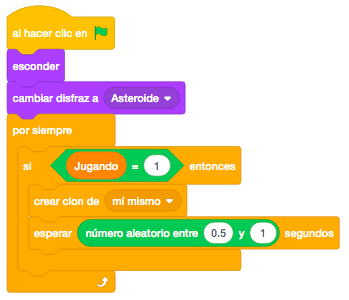
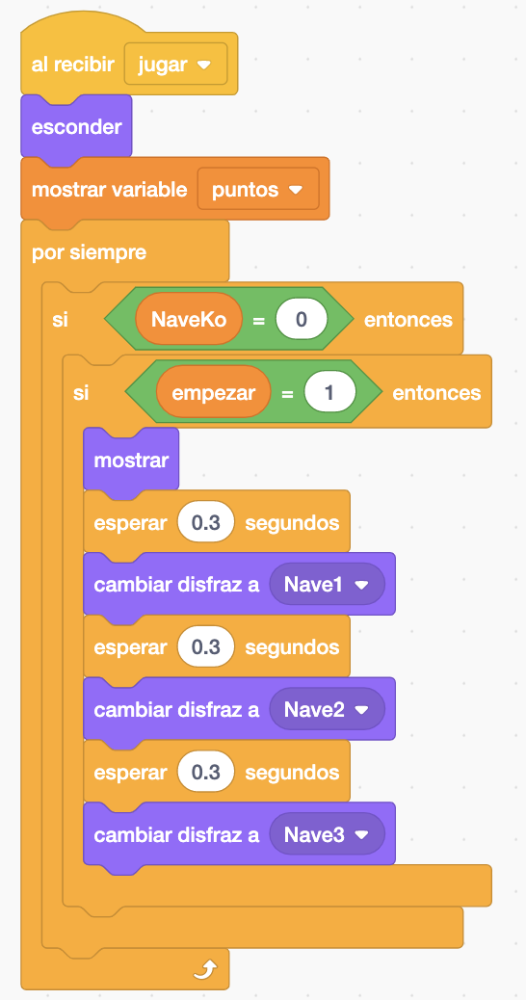
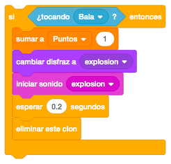
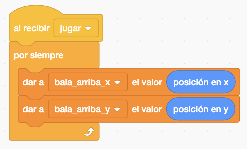
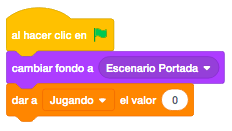

Los objetos necesarios en este juego serán la nave galáctica, la bala que dispara la nave, el asteroide y un botón de play. En este caso, lo que dispara la nave (bala, láser o lo que más te guste) lo dibujaremos nosotros.
Necesitamos dos escenarios, el de la intro y el del juego, que será el espacio con estrellas que descargaremos de la biblioteca de escenarios.
Para descargar los objetos necesarios para el juego (excepto la bala y el escenario de estrellas), lo haremos desde este link. Es un archivo comprimido con 3 objetos y 1 escenario. Lo descargaremos y lo descomprimimos en el directorio del alumno.
El juego consiste en ir destruyendo los asteroides que van apareciendo por la derecha sin que nos aplasten.
Lo primero que haremos será poner un escenario de estrellas de la biblioteca (por ejemplo "Stars"). Después
añadimos la nave espacial y la colocaremos en la parte izquierda, mirando hacia la derecha y en mitad de la
pantalla.
Añadiremos una variable "Puntos" y la inicializaremos con 0. También crearemos una variable que llamaremos
"Nave Ko" que nos indicará si han destruido nuestra nave o no y que utilizaremos más adelante. La
inicializaremos con el valor 0 que indica que nuestra nave sigue viva.

Empezaremos con el movimiento de la nave. Esta, solo se podrá mover en la mitad izquierda de la pantalla, no pudiendo superar la coordenada "0" de "X" ni podrá esconderse en los laterales inferior y superior nada de la nave. También en el borde izquierdo tendrá que estar visible la nave completa en todo momento. Moveremos la nave con los cursores.
En este juego tendremos prohibido el bloque "Si Toca Un Borde Rebotar".

Hemos añadido en este juego una variable que nos indicará cuando estamos jugando y cuando no, para evitar
utilizar el bloque "Detener". Esta variable la llamaremos "Jugando"
Dado que la nave es una imagen fija, para darle algo de movimiento, crearemos un par de disfraces más con el
fuego en otra posición. Para ello, duplicaremos el disfraz y modificaremos sólo la forma del fuego.
Y para ir cambiando de disfraz, haremos un bucle y lo haremos siempre que estemos jugando.
Ojo con el disfraz de la explosión, que aquí no aparecerá.

Con los asteroides vamos a crear clones. Haremos un bucle y crearemos un asteroide entre cada medio segundo y cada segundo. Sólo los crearemos cuando estemos jugando.

Por cada clon, lo posicionaremos en la parte derecha y la coordenada "y" la haremos aleatoria. También le
daremos un tamaño aleatorio para que tenga un efecto de profundidad.
Luego haremos un bucle para que se mueva hasta la parte izquierda de la pantalla y le añadiremos un control
para que si toca la nave, indiquemos que nos han destruido la nave en la variable, que ya no estamos jugando
más y cambiaremos el disfraz al de la explosión.
También enviaremos un mensaje "Terminar Juego" para hacer en todos los objetos que terminen de funcionar.
Al control le añadiremos que también tiene que estar nuestra nave operativa, ya que si no lo hacemos así, al
estar dentro del bucle, lo que pongamos dentro de este control lo repetirá varias veces.
Al finalizar todo esto, eliminaremos el clon.

Ahora programaremos la bala, que se disparará al presionar el espacio. Recordamos que tenemos que dibujarla.
Al pulsar el espacio, posicionaremos la bala junto a la nave con el bloque "Ir A Nave". Esto lo haremos
dentro de un bucle infinito y siempre que estemos jugando.
A continuación, reproduciremos el sonido de disparo y haremos que se mueva hasta que llegue al final de la
pantalla o toque alguno de los asteroides. Después de eso, esconderemos la bala.

Para que la bala pueda destruir los asteroides, añadiremos otro control dentro del bucle de movimiento del asteroide. Si tocamos la bala, sumaremos un punto, cambiaremos el disfraz del asteroide a la explosión y pondremos un sonido de explosión que grabaremos nosotros mismos. Esperaremos un poco para poder ver la explosión y eliminaremos el clon.

Ahora añadiremos a cada objeto una evento de "Al Recibir Terminar juego" con lo necesario para ocultar cada uno de ellos.

Con el juego terminado, pondremos el escenario portada y el objeto botón de play. El juego empezará con este escenario y daremos a la variable "Jugando" el valor "0" ya que no estamos jugando todavía. Esto lo haremos en el propio escenario.

El botón, lo haremos aparecer al principio. Al pinchar encima, lo esconderemos, pondremos el fondo de estrellas, daremos a "Jugando" el valor "1" ya que empezamos a jugar y enviamos el mensaje "Jugar" que recibirán todos los objetos y que tendremos que cambiar donde estimemos oportuno en cada uno de ellos la etiqueta de "Al Hacer Click En La Bandera" por "Al Recibir Jugar".

Podemos hacer que la nave tenga 3 vidas, con varios disfraces según se va destruyendo la nave.
También podemos incluir una pantalla de "Game Over".
Y el juego quedaría así.
Para ver el juego terminado pulsa
aquí.
Para descargarte el juego terminado pulsa
aquí.